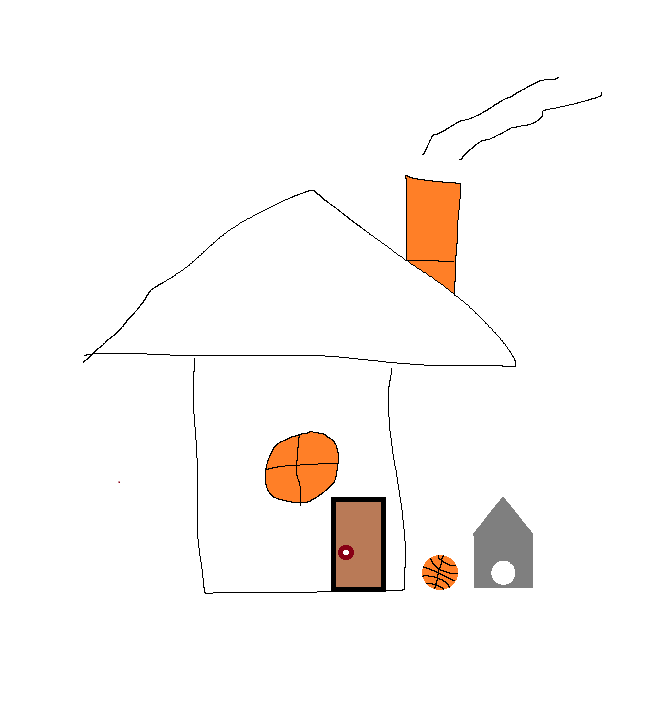

Maja pildikaart
Hiire klik on akna, seina, katuse paele

Uks on tarind, mille abil saab hoonesse või ruumi sissepääsu ja sellest väljapääsu võimaldamiseks mõeldud ava sulgeda. Selleks asetatakse uks nii, et ta sisse- ja väljapääsuava tihedalt kataks.